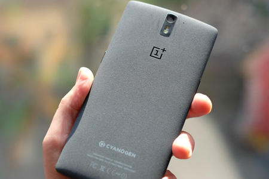

2014 saw a lot happening in the smartphones. Most noticeably, phones got bigger, even from the companies which insisted on not doing it for years. In terms of solid innovation, there was very little. But, we did see some phones which were not possible before. Here’s our list of the top 10 phones of 2014.
-

#3 Apple iPhone 6+
2014 was the year Apple broke their own rule of no big phones with their own phablet. iPhone 6Plus comes with 5.5" Retina HD display, which looks stunning. Improved with newer A8 processor, bigger battery which lasts a couple of days and OIS for the camera. Apple hasn't done anything to take advantage of the huge display yet, except for Reachability.
-

#2 Apple iPhone 6
The iPhone 6 is Bigger and better in every single way. It comes with a 4.7" Retina Display and the device is stunningly thin which makes it really easy to use in one hand. It continues to have everything we've always expected an iPhone to have. One downside though, is the battery which has not seen much of an improvement from the previous generation.
-

#1 OnePlus One
The crown for the top phone of 2014 goes to the One Plus One, a.k.a 'The Flagship Killer'. The phone has made waves ever since it was announced. Almost every phone in this list costs over $600 unlocked. OnePlus One only costs $350 making it the biggest feature of this phone. No compromises were made to bring the phone to that price point making it the best phone of the year.